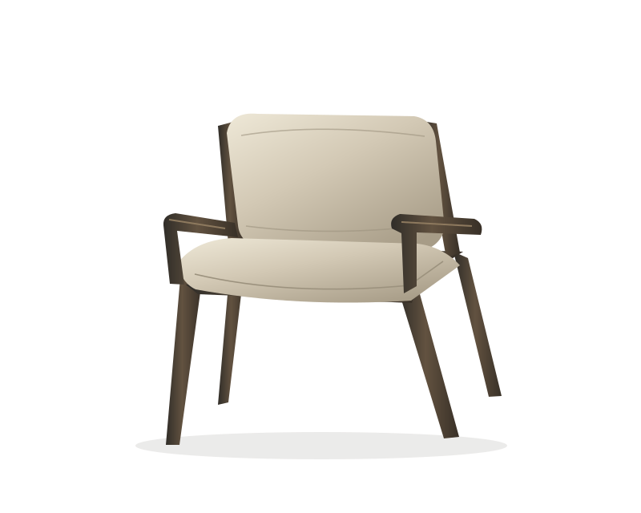
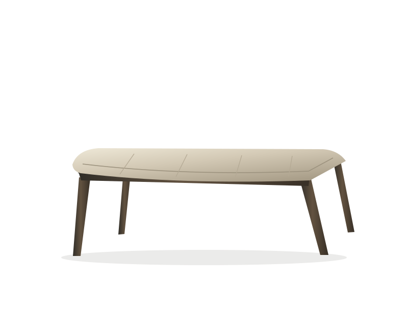

SEATING / STUDIES 01—02
A softer
edge.
A line of timber.
A little room to settle.

The cushion stops just short of the frame. That small gap lets each material keep its own outline.
Look a little closer ↓WHERE THE MATERIALS MEET
Softness,
held in place.
The seam follows the curve of the seat. Below it, the timber stays visible: a quiet boundary between the soft surface and the structure that carries it.
An enlarged illustration of the Frame study, rather than a second view of the whole chair.
Read the material notes ↗THE COLLECTION
One language.
Two proportions.
The same open frame becomes a longer, lower seat.

BEFORE THE OBJECT BECOMES A PRODUCT
A collection in study.
Varrow Editions is a fictional furniture collection. The drawings explore proportion and material relationships; the collection document records illustrative dimensions, not production specifications.
Open the collection document ↗